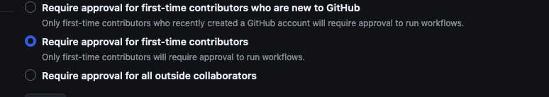

Exploring CI/CD Vulnerabilities in github actions
I hope this message finds you well. Today, I’m thrilled to share my journey and insights into exploring CI/CD vulnerabilities in GitHub Actions.
Getting started
To start with actions It is crucial to understand the intricacies of action workflows and familiarize yourself with their functionality and the significance of each event. Crafting sample workflows can significantly aid comprehension.
To help you get started, I have a YouTube playlist with informative videos that will guide you in getting acquainted with action workflow
Understanding Workflow Events
I will only talk about two worfklow events which will lead to RCE if misconfigured in action workflows
pull_request_target and workflow_run events
Configuration for action:
Lets talk about the Configuration that are used for action. 
The default permission allow first time contributer to be run the the action runners without any approval from the maintainer. Most of the repositories are having this deafult one configured. You can look at the pull requests which are being opend to confrim to if you need to became first contributer or Not for exploiting it.
Running Attacker Code
pull_request_target: This event is same aspull_requestbut the main difference is that it has a write permission for the tokens, So an attacker can execute Malicious commands with write permissions if the event is misconfigured.
Here is an yaml file which is vulnerable for malcious execution by pull_request_target.
Example 1: Vulnerability via pull_request_target
on:
pull_request_target
jobs:
build:
name: Build and test
runs-on: ubuntu-latest
steps:
- uses: actions/checkout@v2
with:
ref: ${{ github.event.pull_request.head.sha }} # from here on it will take the attacker code as it is checking out the untrusted input
- name: Setup node
uses: actions/setup-node@v2
with:
node-version: '16'
- name: Install dependencies
run: npm install
- name: Build docs
run: npm run create-docs
Explanation:
ref: ${{ github.event.pull_request.head.sha }}
From this part the action will run on the attacker forked code base as it is using head.sha which will take attacker pull request as a input and make the base repo action to run the attacker’s fork code here.
- name: Setup node
uses: actions/setup-node@v2
with:
node-version: '16'
From this ownwards the code will setup npm enviroment from the action runner from the attackers code.
- name: Install dependencies
run: npm install
- name: Build docs
run: npm run create-docs
The potentially untrusted code is being run during npm install and npm run as the referenced packages are controlled by the author of the PR.
Exploitation
Now in the forked Repo you can modify your input in package.json and create a pull request.
"scripts": {
"create-docs": "echo 'your code'"
}
2.workflow_run: This event allows a user to trigger privileged workflows. It triggers when the status of the other workflow is complete/requested and can be triggered from a forked workflow.
Here is an yaml file which is vulnerable for malcious execution by workflow_run
Example 2: Vulnerability via workflow_run
name: Deploy docs
on:
workflow_run:
workflows: ['Publish Package']
types: [completed]
jobs:
deploy-docs:
runs-on: ubuntu-latest
if: ${{ github.event.workflow_run.conclusion == 'success' }} #if the workflow is successfully completed then it will start rest of the tasks in the job
steps:
- name: Checkout
uses: actions/checkout@v2
with:
ref: ${{ github.event.workflow_run.head_sha }} # checkout specific commit
- name: Setup node
uses: actions/setup-node@v2
with:
node-version: '16'
- name: Install dependencies
run: npm install
- name: Build docs
run: npm run create-docs
Explantion:
workflow_run:
workflows: ['Publish Package']
types: [completed]
if: ${{ github.event.workflow_run.conclusion == 'success' }}
This workflow will run after the workflow named Publish Package' have been successfully completed as mentioned in the if:. So for triggering this
workflow we need to create workflow name Publish Package in the fork repo [there can be same workflow with same name].
Exploitation
here will create a workflow which will have the name Publish Package with a normal pull_request event,Which will successfully run and trigger the vulnerable
workflow
name: Publish Package
on:
pull_request:
types: [opened]
jobs:
publish-package:
runs-on: ubuntu-latest
steps:
- name: Check out repository
uses: actions/checkout@v2
- name: Example Step
run: echo "This is an example step for publishing the package"
This will help us to trigger the other workflow Deploy docs
modifying package.json file
"scripts": {
"create-docs": "echo 'your code'"
}
Remediation:
Avoid checking out untrusted code within action workflows to mitigate vulnerabilities.
Conclusion:
I have not cover many other exploit scenarios and events which can lead to vulneribility.
Reference:
https://www.legitsecurity.com/blog/github-privilege-escalation-vulnerability
https://cloud.hacktricks.xyz/pentesting-ci-cd/github-security/abusing-github-actions